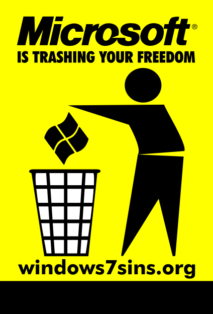

Windows 7 nuodėmės
Windows 7 pasirodys spalio 22 dieną (Ubuntu Karmic Koala spalio 29 dieną). Ta proga FSF paleido kampaniją prieš Windows 7: windows7sins.org.
Kadangi į IT vystymosi tendencijas žiūriu, kiek giliau, nei eilinis kompiuterio naudotojas, tai nusprendžiau palaikyti FSF ir paskleisti jų žinią.
Ką reiškia „žiūrėti kiek giliau“? Pateiksiu paprastą pavyzdį. Kaip žinote, viena iš dabartinės pasaulinės krizės atsiradimo priežasčių – beatodairiškas skolinimasis. Tai lėmė toks neatsakingas žmonių požiūris: „skolinuosi pinigų būstui įsigyti, skolą atiduosiu per 40 metų, man dabar gerai, o po to bus matyt, kaip nors išgyvensiu“. Šioje vietoje interpretacijų galima prisigalvoti kiek tik nori, tačiau viskas ką noriu pasakyti, kad reikia į dalykus žiūrėti kur kas giliau. Lygiai tas pats ir IT pasaulyje, pavyzdžiui daugelis žmonių naudoja Windows ir dėl nieko nesuka sau galvos, tačiau jei žiūrėtumėte giliau, suprastumėte kokie pavojingi dalykai vyksta Microsoft užkulisiuose.
Tai tokia mano įžanga, o dabar apie tuos „pavojingus dalykus“ iš FSF kampanijos.
{kind=link}
Naujoji Microsoft Windows operacinės sistemos versija, Windows 7, turi tas pačias problemas, kurias turi Windows Vista, XP ir visos kitos prieš tai buvusios versijos – jos yra nuosavybinės (priklauso vienai įmonei). Windows naudotojai neturi teisės dalintis, keisti ar aiškintis, kaip jų naudojama operacinė sistema veikia iš vidaus.
Kadangi Windows 7 yra Microsoft įmonės nuosavybinis produktas, tai reiškia, kad ši įmonė, visiškai legaliai gali kontroliuoti jos produkcijos naudotojus, per autorinių teisių įstatymus, įvairias sutartis ir programinės įrangos patentus. Microsoft naudodamasi savo didžiule įtaka daro spaudimą ir neigiamą poveikį daugeliui kompiuterių naudotojų. Free Software Foundation, windows7sins.org svetainėje, pateikiami 7 tokio neigiamo poveikio pavyzdžiai.
1. Mokymo įstaigų nuodijimas: Šiandien, daugelis vaikų, kurių mokymosi procese naudojami kompiuteriai, mokomi naudotis tik vienos įmonės – Microsoft produkcija. Microsoft išleidžia didžiulius pinigus lobistams ir marketingui, kad galėtų „nusipirkti“ mokymosi įstaigas. Kompiuterių naudojimas mokyme, turėtų suteikti daugiau laisvės ir galimybių, bet tai tikrai neturėtų būti dar vienas kelias didelės korporacijos monopolijai įtvirtinti.
2. Asmens privatumo užgrobimas: Microsoft naudoja programinę specialią programinę įrangą, tokią, kaip Windows Genuine Advantage, kuri tikrina naudotojo kompiuterio kietojo disko turinį. Licencija, su naudotojai privalo sutikti prieš naudojant Windows, įspėja, kad Microsoft teisę tikrinti jūsų kompiuterio disko turinį, be įspėjimo.
3. Monopolijos stiprinimo elgsena: Beveik visi kompiuteriai, kuriuos galima įsigyti, turi įdiegtą Windows operacinę sistemą – be teisės rinktis. Microsoft diktuoja sąlygas kompiuterių kompiuterių gamintojams, kurie spaudžiami įdiegti Windows į savo parduodamus kompiuterius, nors dažnai naudotojai nori įsigyti tiesiog kompiuterį, be jokios operacinės sistemos. Net jei kompiuteris parduodamas su kita operacine sistema, tokia kaip GNU/Linux, dažniausiai prieš tai turėjo įdiegtą Windows OS.
4. Užrakinimas: Microsoft reguliariai bando versti naudotojus atsinaujinti naudojamą produkciją, paskelbdami, kad senesnės Windows arba Office versijos nebe palaikomos, išpučiami reikalavimai kompiuteriui. Daugeliui žmonių tai reiškia veikiančių kompiuterių išmetimą, vien tik tam, kad galėtų naudoti naujausią Windows versiją.
5. Standartų išnaudojimas: Microsoft bandė sustabdyti kompiuterinių dokumentų standartizavimo procesą todėl, kad OpenDocument Format (ODF) standartas kėlė grėsmę prarasti turimą įtaką su paplitusiu nuosavybiniu Word DOC formatu. Kad būtų sustabdytas dokumentų standartizavimas, buvo įsitraukta į užkulisinę veiklą, papirkinėjami standartizacijos komisijos nariai ir panašiai. Nepavykus sustabdyti ODF, Microsoft nesutiko naudoti šio standarto ir vietoje to, panašiu, keliu, kaip ir buvo bandoma sustabdyti dokumentų standartizavimą, inicijavo dar vieną dokumentų formatų standartą OOXML, kurį patys sukūrė ir pritaikė savo produkcijai.
6. Skatinamas skaitmeninio ribojimo valdymas (DRM): Per Windows Media Player, Microsoft, bendradarbiaudama kartu su didelėmis media kompanijomis kuria įvairius ribojimus draudžiančius kopijuoti, klausyti ir peržiūrėti muziką ar vaizdo įrašus Windows operacinėje sistemoje. Pavyzdžiui, gavus NBC užklausimą, Microsoft turi visas priemones uždrausti Windows naudotojams įsirašyti televizijos laidas, kurias įsirašyti jie turi pilną teisę.
7. Grėsmė naudotojų saugumui: Windows turi ilgą saugomo pažeidžiamumų istoriją, per kuriuos plinta virusai, atsiranda galimybė perimti kompiuterį per tinklą, kad jį būtų galima panaudoti kaip brukalų siuntimo priemonę. Kadangi programinės įrangos išeities tekstai yra įslaptinti, visi priklausomi tik nuo Microsoft malonės ir tikisi, kad visos saugumo skylės bus ištaisytos. Tačiau Microsoft turi savų tikslų kalbant apie saugumą, kurie ne visada sutampa su naudotojų pageidavimais.
Tu gali rinktis!¶
Su laisvomis operacinėmis sistemomis, tokios kaip GNU/Linux, galite daugiau ar mažiau daryti tą patį ką ir su Windows. Skirtumas tik tas, kad su laisvomis programomis naudotojai skatinami dalintis, taikyti savo poreikiams ir studijuoti iš ko ir kaip padaryta programa. Laisvų operacinių sistemų naudojimas – geriausias būdas pabėgti nuo Microsoft ir išvengiant galimybės tapti šių septinių nuodėmių aukomis. Programos ir kompiuteriai visą laiką turi vienokių ar kitokių trūkumų, tačiau naudojant laisvas programas yra galimybė visas atsiradusias problemas pasitaisyti patiems ir visiems kitiems.
Pabaigai¶
Nežinau, kaip jūs, bet aš niekada nepritariau labai stipriai išaugusių korporacijų viešpatavimui. Nors ir gyvenu demokratinėje šalyje, kurioje turiu teisę pats išsirinkti savo vadovą, tačiau tikrai nesinori, kad tavo išrinkta valdžia atsidurtu kažkokios tai stambios korporacijos monopolio šešėlyje. Kadangi korporaciją valdo vienas ar keli žmonės, tai labiau panašu ne į demokratiją, o į monarchiją.
Manau, kad Microsoft yra viena iš tokių korporacijų, kuri iškilo pakankamai aukštai ir tolesnis kilimas tikrai neleistinas. Jau nekartą atsimušiau į Microsoft sieną, tikrai nenoriu, kad ateityje tokių sienų būtų dar daugiau…
Siūlau visiems susimastyti, priešingu atveju visai netrukus galima skaudžiai nukentėti sugrįžtant į vergovės laikus.